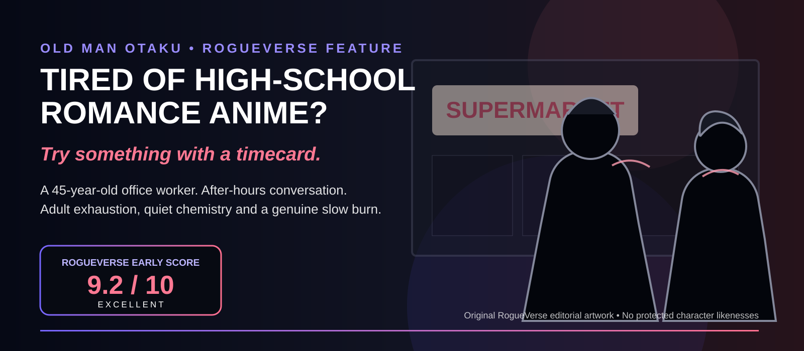

OLD MAN OTAKU / ROMANCE ANIME • AUGUST 17, 2026
Tired of High-School Romance Anime? Try Smoking Behind the Supermarket with You
A 45-year-old office worker, an after-hours smoking spot and one woman with two very different sides have produced one of 2026's most refreshing romances for grown-ups.

There is an entire generation of anime fans who grew up watching teenagers spend twelve episodes trying to work up the courage to hold hands.
Some of us have jobs now.
Bills. Meetings. Grocery runs. The occasional lower-back complaint that arrives without a dramatic anime training montage.
That is part of why Smoking Behind the Supermarket with You lands differently. Based on Jinushi's manga, the 2026 anime focuses on Sasaki, a 45-year-old office worker whose days have been sanded down by corporate life. One of his few reliable comforts is the friendly service of supermarket cashier Yamada. Then, after work, he meets the sharper, more rebellious Tayama behind the store and begins sharing smoke breaks with her.
The joke powering the premise is beautifully simple: Yamada and Tayama are the same woman, and Sasaki does not realize it.
But what keeps the series working is not the disguise gag. It is the quiet adult loneliness underneath it.
This Is Barely About Smoking
Yes, the title is literal. The characters smoke. The anime is not presenting cigarettes as health advice, and neither are we.
Narratively, the cigarette is an excuse for something much more important: two adults stopping for a few minutes.
The space behind the supermarket becomes neutral territory. Sasaki is no longer the employee whose attention belongs to his company. Yamada is no longer performing customer-service politeness. For a little while, nobody has to be productive, useful or professionally cheerful.
They can simply talk.
Many romance anime manufacture intimacy through festivals, school trips, confessions, accidental hand contact and increasingly elaborate misunderstandings. Smoking Behind the Supermarket with You builds intimacy through a bad day, a joke, a shared routine and five more minutes before going home.
The mundane becomes romantic because adulthood can make uninterrupted human connection unexpectedly precious.
Sasaki Is Why the Premise Works
A lonely middle-aged man becoming attached to a younger supermarket employee could have turned uncomfortable very quickly. Instead, Sasaki is written as almost painfully cautious about boundaries.
He worries about bothering people. He worries about embarrassing himself. He repeatedly fails to interpret situations romantically even when the audience can see Tayama pushing his buttons.
That restraint matters.
Sasaki is not framed as a man chasing youth. He is a tired person who has stumbled across someone whose presence makes the end of his day feel lighter. Tayama gives him something corporate adulthood has quietly removed from his life: a place where he can lower his shoulders.
Yamada and Tayama Are More Than a Gimmick
Sasaki sees two versions of the same woman.
With Yamada, he sees warmth, professionalism and reassurance. With Tayama, he gets teasing, bluntness and much more emotional freedom. The audience understands that these are not two separate personalities. They are two social contexts.
That is surprisingly grown-up territory for a romantic comedy.
Most people do not behave exactly the same way at work, with friends, at home and around somebody they are attracted to. The series exaggerates that truth into a running joke, but underneath the joke is a good romantic idea: falling for somebody often means gradually discovering the versions of them that the rest of the world does not see.
It Understands Being Tired
This is the biggest distinction between this show and the endless school-romance pile.
Work schedules matter. Fatigue matters. Going home matters. Time matters.
The relationship exists inside adult lives that were already moving before the romance appeared. Nobody gets to suspend the rest of existence because they have a crush.
When your emotional battery is sitting at three percent, somebody who makes the remaining evening slightly better can become enormously important.
The Slow Pace Is the Point
If you need a major romantic milestone every episode, this series may test you. It is a genuine slow burn.
Progress is not measured only through kisses, declarations or official relationship status. It is measured through comfort: how easily they talk, how quickly they notice changes in each other's mood, how much they begin anticipating one another and how much of themselves they allow into the conversation.
That can look like “nothing happened” if plot is the only ruler being used. With this story, the changing ease between two people is the plot.
The manga's appeal predates the adaptation. It placed first in the Web Manga category of the 2022 Next Manga Awards, while Square Enix later brought the English manga to print. The anime adaptation arrived in 2026, giving that low-key relationship a much larger stage.
RogueVerse Early Rating
Rating status: provisional through Episode 6. The season is still airing, so RogueVerse will revisit the score after completion.
ROGUEVERSE EARLY CONSENSUS
9.2 / 10EXCELLENT
Its biggest weakness is inseparable from its identity: not much happens in the conventional sense. If you are waiting for romantic plot detonations, you are standing behind the wrong supermarket.
If chemistry, conversation and adult loneliness are enough to carry a story for you, however, this is one of 2026's most satisfying romance watches so far.
Six Anime to Watch Next
These are not clones. The shared DNA is adult characters, workplace life, emotional fatigue or romance that exists outside the usual high-school ecosystem.
1. Wotakoi: Love Is Hard for Otaku
Adult office workers, established nerd identities and relationships that have to coexist with careers, hobbies and friendships.
Best for: viewers who want grown-up romance with substantially more comedy and otaku culture.
2. 365 Days to the Wedding
Two quiet coworkers fake an engagement to avoid an overseas transfer, then discover that pretending to build a life together can generate inconveniently real feelings.
Best for: introverts, awkward adults and workplace romance.
3. Recovery of an MMO Junkie
A 30-year-old woman leaves an exhausting corporate life and finds unexpected human connection through an MMO.
Best for: burnout, gaming and adults trying to reconstruct their social lives.
4. The Ice Guy and His Cool Female Colleague
A gentle office romance in which supernatural snow-spirit powers turn feelings into literal weather.
Best for: workplace sweetness with a fantasy twist.
5. My Senpai Is Annoying
Brighter, louder and more ensemble-driven, but still rooted in adults navigating attraction alongside actual jobs.
Best for: viewers who want office romance with more comedy energy.
6. Servant × Service
A workplace ensemble about municipal employees where friendship, comedy and romantic threads grow naturally out of daily office life.
Best for: workplace slice-of-life where romance is one ingredient rather than the entire meal.
Maybe Anime Romance Just Needed to Grow Up With Us
Anime does not need to stop telling teenage love stories. Coming-of-age romance is one of the medium's most productive lanes.
But the audience has aged too.
Some of the viewers who discovered anime through Dragon Ball Z, Sailor Moon, Naruto, Bleach, Inuyasha or Adult Swim are no longer wondering who they will sit next to in homeroom. They are wondering whether the electric bill cleared and whether there is enough energy left to cook after work.
Stories about adults in their thirties, forties and beyond have different romantic pressure points. The fear is less “will somebody reject my confession behind the gym?” and more “am I misreading this, crossing a boundary, making work awkward or discovering that I have forgotten how to let another person into the life I already built?”
That is fertile territory.
Smoking Behind the Supermarket with You proves that romance anime does not need fireworks to explore it.
Sometimes all it needs is fluorescent supermarket light, two tired adults and five quiet minutes behind the building.
RogueVerse Verdict
Watch it.
Especially if you have ever watched a cute anime couple and thought, “I would also like these people to have experienced payroll.”
More romance: 10 Under-the-Radar Romance Anime You Should Be Watching →